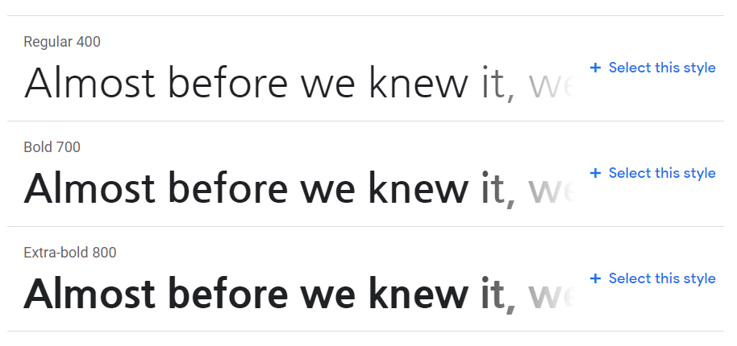
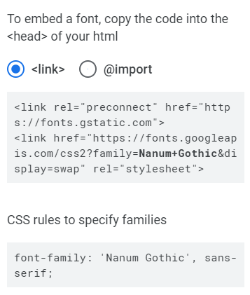

[CSS]
폰트 스타일
1. 폰트(font)
: CSS3의 폰트와 모양
- 폰트는 페이지의 디자인에 절대적인 영향을 줌
- 폰트 종류, 크기, 색상, 장식 등 설정 가능
- Serif 형 (Serif 있는 서체)
- Sans-Serif 형 (Serif 없는 서체)
- Monospace 형 (글자 폭 동일)
2. font-fmaily : 폰트 종류
font-family : Arial, "Times New Roman" , Serif
((콤마로 연결)) Arial 폰트가 없는 경우 ↲ Times New Roman 폰트도 없는 경우 ↲
- 여러 개의 폰트 종류 제공하는 것이 좋음
(클라이언트 컴퓨터에 지정된 폰트가 없을 수도 있기 때문)
- 브라우저는 첫 번째 폰트가 없으면, 그 다음 폰트를 시도
- 폰트 이름이 여러 단어로 구성되어 있다면 큰따옴표("")로 묶어서 표시
- web 폰트
구글 웹 폰트 사용하기 : 구글 웹 폰트 사이트

1) 마음에 드는 폰트 선택해 +select this style 누르기 (오른쪽 하단)

2) 해당 웹 폰트를 사용할 HTML 파일에서 <head>내부에 <link>태그 복사해 넣기
3) 'CSS rules to specify families' 안에 있는 코드 복사해 CSS 파일에 붙여넣기
3. font-size : 폰트 크기
- 단위
- px
- 상수 -> xx-small, x-small, small, medium, large, x-large, xx-large
- em(부모 요소에 상대적크기) -> 1em==16px==100%
- pt, % ...
4. font-weight, font-style : 폰트 굵기, 이텔릭체 스타일 여부
- font-weight -> 100~900 // normal(400), bold(700), bolder, lighter(상위요소보다)
- font-style -> normal, italic
5. font : 폰트 축약
- 폰트 속성 나열 순서
-
{ font : font-style, font-weight, font-size, font-family }
- 필수 속성 -> font-size, font-family // 나머지 생략 가능